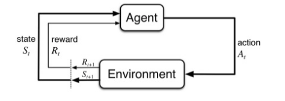
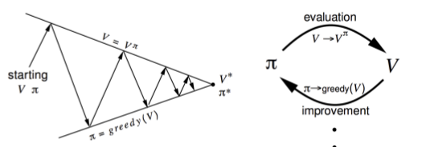

19 October 2018 | Aditya Jain
Before we go ahead and start discussing about policy optimization methods in Reinforcement Learning. Let me first clear few terms such as markov decision process, bellman equation, states, actions, rewards, policy, value functions etc. So lets understand them one by one.
In Reinforcement Learning, An AI agent learn how to optimally interact in a Real Time environment using Time-Delayed Labels called as Rewards as a signal.
Markov Decision Process is a mathematical framework for defining the reinforcement learning problem using STATES, ACTIONS, REWARDS.
Through interacting with an environment, an AI will learn a policy which will return an action for a given STATE with the highest reward.
Markov Decision Process(MDP)
Reinforcement Learning problems are mathematically described using framework called Markov Decision Process(MDP). MDP are extended version of Markov Chain which adds decision and rewards to it. Markov indicates 'Markovian Property' means future state is independent of any previous state history given current state and action. Current state contains all that is needed to decide the future state when input action is given. This simplifies things a lot. Example "In a game of Chess".
MDP is an approach in achieving reinforcement learing to take decisions in a matrix. A grid would consist of states in form of grid. MDP tries to capture world in form of grid by dividing it into states, actions, transition matrix and rewards. The solution of MDP is policy and objective is to find optimal policy for task that MDP is imposed. Thus any reinforcement learning task is composed of set of states, actions and rewards that follow markov property is considered as MDP.
State : A set of tokens that represent every condition that agent can be in.
Model : model or transition model gives an action's effect in state. In particular `T(s,a,s')` defines transition T where being in state S, taking action 'a' takes us to state 's'. For stochastic actions (noisy, non-deterministic) we define probabiliity `P(S'|S,a)` which represent probability of reaching S' if action 'a' is taken in state S.
Action : Action 'a' is set of all possible decision, a(s) defines set of action that can be taken in state S.
Reward : It is a real-valued response to action. ` R(s) ` indicate reward for being in state 's'. ` R(s,a) ` is reward for being in state 's' and taking action 'a'. ` R(s,a,s') ` indicates reward for being in state 's', taking action 'a' and ending up in state 's'.
Policy : It is a solution to Markov Decision Process. It is set of actions that are taken by agent to reach goal. It indicates action 'a' to be taken which in state S. A policy is denoted as 'Pi' as `pi(s)` -> `infty`
` pi ^ \ast ` is called optimal policy, which maximizes expected reward. Among all policy taken, optimal policy one that maximize the amount of reward received or expected to receive over a lifetime. For an MDP there's no end of lifetime and you have to decide end time.
Policy is nothing but a guide telling which action to take for a given state. It is not a plan but uncovers the underlying plan of the environment by returning the actions to take for each state.
Markov Decision Process (MDP) is a tuple (S,A,T,r,?).

` S ` : Set of Observations
` A ` : Set of Actions
` T ` : Transition Model
` r ` : Reward Model
` ? ` : Discount factor (between 0 & 1) represent relative importance between immediate and future reward.
Bellman Equation
Bellman Equation, help us evaluate the expected reward relative to the advantage or disadvantage of each state.
Question that Bellman equation answers:
Given a state I'm in, assuming I take the best possible action now and at each subsequent step, what long term reward can I expect.
OR
What is the value of the STATE?
Bellman equations are Dynamic Programming Equations. If you dont know about dynamic programming, it is better to clear your concepts about dynamic programming.
For Deterministic Environment
In Deterministic enviroment, an agent will follow what the command is given to it. There is no probability of following some other action.
$$ V(s) = max_a \Bigl( R(s,a) + \gamma V(s') \Bigl) $$
` V ` : Value of given state s
` max_a ` : Maximum for action a
` R ` : reward for action a in state s
` γ ` : discount factor (Gamma)
` s `: Next state by choosing action a
For Stochastic Environment
In stochastic environment, an agent will not always follow what we tell it to do. There is always a probability of following your commands. For this we will have to modify our Bellman equation as follows:
$$ V(s) = max_a \Bigl( R(s,a) + \gamma \sum_{s'} P(s,a,s') V(s') \Bigl) $$
` V ` : Value of given state s
`max_a`:Maximum for action a
` R ` : reward for action a in state s
` \gamma ` : discount factor (Gamma)
` s' ` : Next state by choosing action a
Value Functions
It estimates "how good" a state is for an agent to be in. Equal to expected discounted reward per agent when starting from state 's' and successfully following policy ` pi ` for an action. May also be referred as 'Value of policy.'
Two types of value functions.
- State-Value Functions : Expected/Discounted reward when starting in state 's' and successfully following policy '` pi `' for an action. Denoted as ` V(s) or V_pi(s) `. How good is a state.
- Action-Value Function : Action 'a' to state 's' and return a real value. Referred as Q-function. Denoted as ` Q(s,a)`. How good is a state action pair for agent in environment.
Optimal value function is a value function of a state for an optimal policy `pi^ast`, which maximizes discounted reward. Among all value function, there exist a one higher value function for all states denoted by ` V^ast(s) `.
Policy Optimization
Until now we have studied about Reinforcement Learning environment, and we have also learned what our goal is in that enviroment i.e. to find Optimal Policy or say to find optimal value function because one will lead to another. In this blog we will discuss policy optimization using planning by dynamic programming. Dynamic Programming assumes full knowledge of MDP. It is used for planning in a MDP.
Here we will discuss, 2 methods:
- Policy Iteration : Policy Evaluation `+` Policy Improvement and the two are expected iteratively until policy converges.
- Value Iteration : Finding optimal value function `+` one policy extraction. There is not repeat of the two because once the value function is optimal, then policy out of it should also be optimal.
1. Policy Iteration
Problem : Given a policy `pi`, Find the optimal policy `pi^ast`.
Solution:
- Evaluate the policy `pi`.
$$ V_{\pi}(s) = E\Big[ R_{t+1} + \gamma R_{t+2} + .... | s_t = s \Big] $$
- Improve the policy by acting greedily with respect to `V_pi`.
$$ \pi^\ast = greedy\Big( V_{\pi} \Big) $$

- Policy evaluation - Estimate `V_{pi}`, Iterative policy evaluation
- Policy improvement - Generate ` pi^' >= pi `, Greedy policy improvement
Lets discuss the Policy Evaluation
- Iterative application of Bellman expectation backup.
- ` V_1 -> V_2 -> V_3 -> .... -> V_{pi} `.
Start with random value function and iteratively figure out new value function.
- Using Synchronous backups:
- at each iteration k+1
- For all state `s\inS`
- Update `V_{k+1}(s)` from `V_k(s')` using bellman expectation equation.
$$ V_{k+1}(s) = \sum_{a \in A} \pi(a|s)\Big( R_s^a + \gamma \sum_{s' \in S} P_{ss'}^a V_k(s') \Big) $$
$$ V^{k+1} = R^{\pi} + \gamma P^{\pi}V^{k} $$
- Where `s'` is successor of state `s`.
Lets discuss the Policy Improvement
- Find the best policy from the value function obtained from policy evaluation using greedy method.
- This process of policy iteration always converges to `pi^ast`.
Example: Below is the example code for policy iteration for Frozen Lake environment using OpenAI gym library. Play with code and put doubts in comment section below.
2. Value Iteration
Problem : Find Optimal Policy `pi^ast`.
Solution : Iterative application of Bellman optimality backup.
- ` V_1 -> V_2 -> V_3 -> .... -> V_ast `. Start with random value function and update values using bellman optimality equation.
- Using Synchronous backups:
- at each iteration k+1
- For all state `s\inS`
- Update `V_{k+1}(s)` from `V_k(s')` using bellman optimality equation.
$$ V_{k+1}(s) = \max_{a \in A} \Big( R^a_s + \gamma \sum_{s' \in S} P^a_{ss'} V_k(s') \Big) $$
$$ V_{k+1} = \max_{a \in A} \Big( R^a + \gamma P^aV_k \Big) $$
- Where `s'` is successor of state `s`.
- Unlike policy iteration, there is no explicit policy.
- Intermediate value functio may not correspond to any policy.
- After we finally get optimal value function, we will extract policy using greedy method from that value function. We have to do this only once because optimal value function always gives optimal policy.
Example : Below is the example code for value iteration for Frozen Lake environment using OpenAI gym library. Play with code and put doubts in comment section below.
Conclusions
| Problem |
Bellman Equation |
Algorithm |
| Prediction |
Bellman Expectation Equation |
Iterative Policy Evaluation |
| Control |
Bellman Expectation Equation + Greedy Policy Improvement |
Policy Iteration |
| Control |
Bellman Optimality Equation |
Value Iteration |
- Algorithms are based on state-value function `V_pi(s) or V_ast(s)`
- Complexity `O(mn^2 )` per iteration, for m actions and n states
- Could also apply to action-value function `q_pi(s, a) or q^ast(s, a)`
- Complexity `O(m^2n^2 )` per iteration
More Resources
- RL Course of David Silver - PPT
- RL Course of David Silver - Lecture
- Bellman equation tutorial for reinforcement Learning
- Example codes and problems to understand policy optimization better.